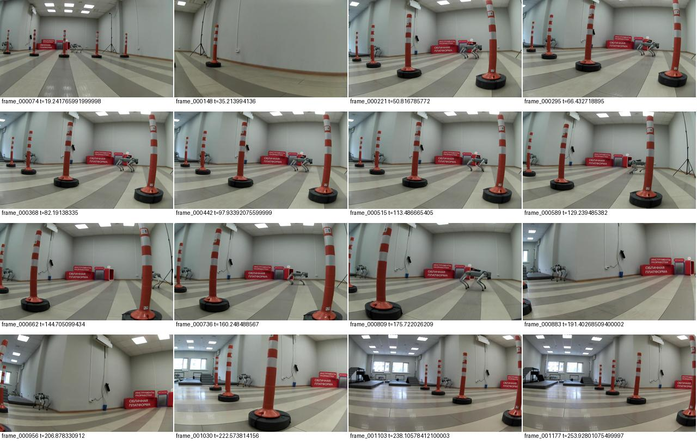
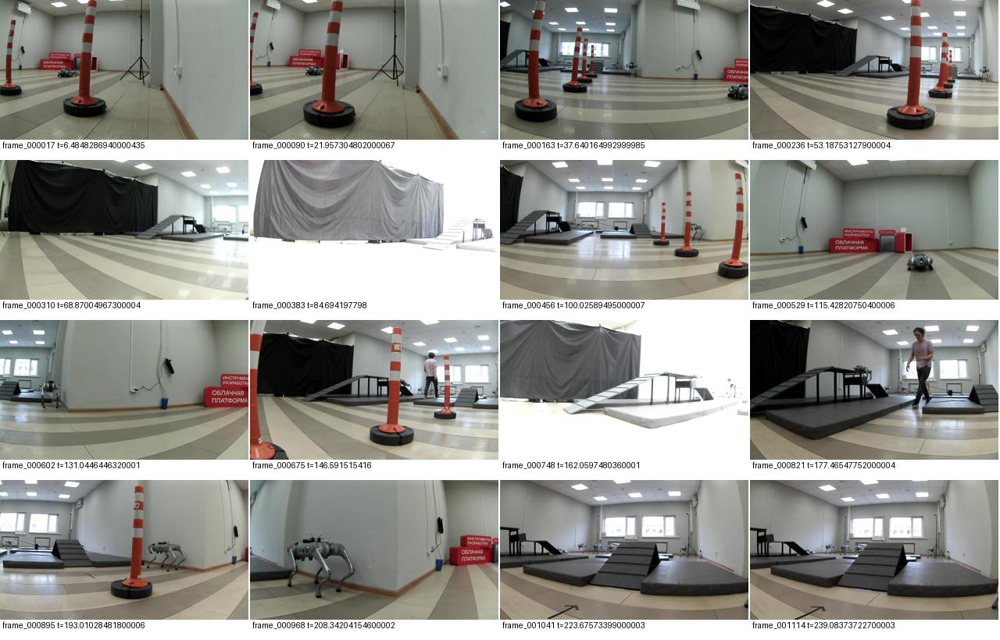
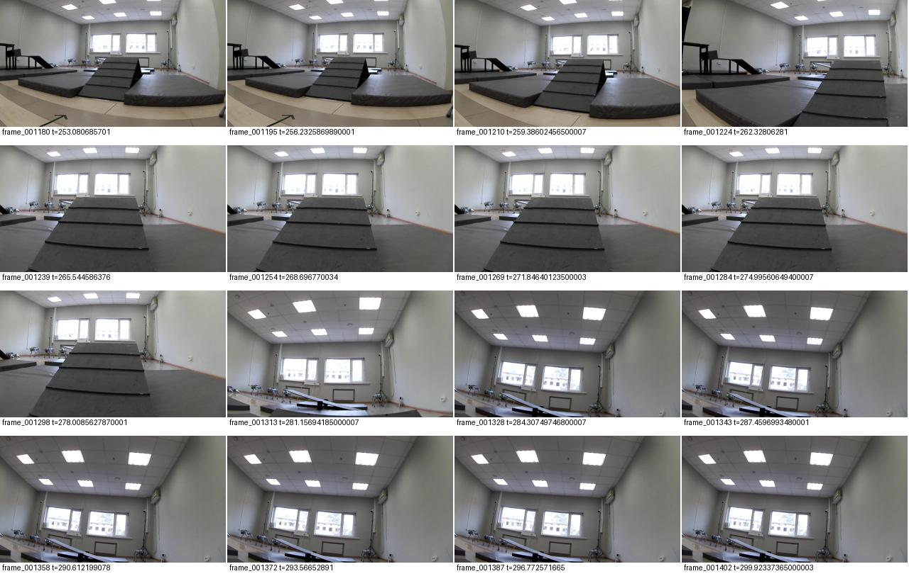
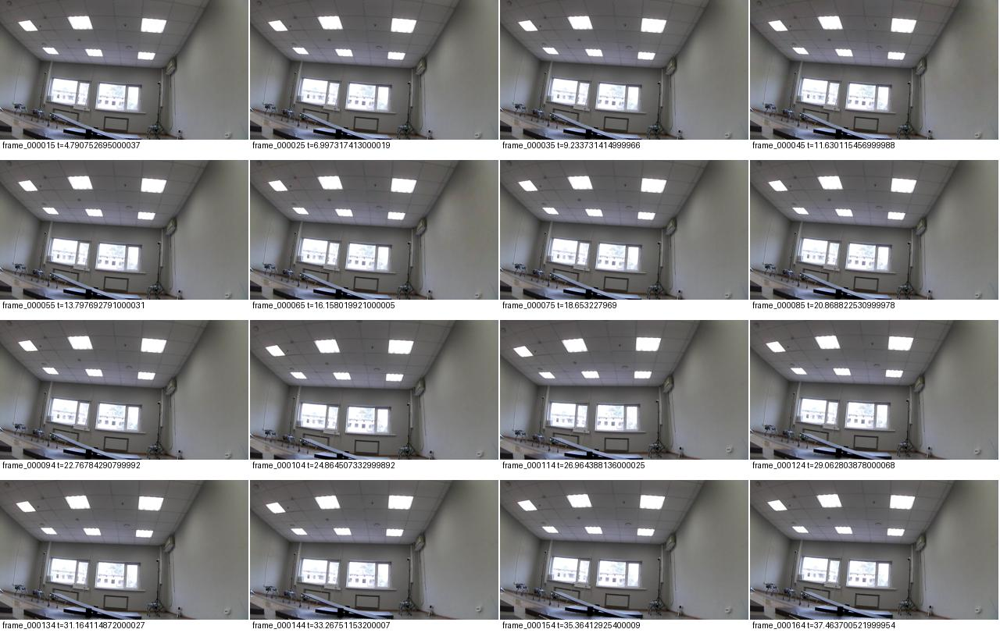
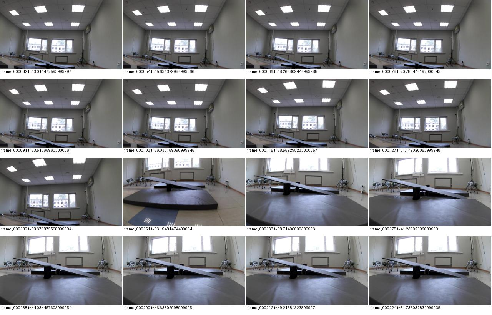
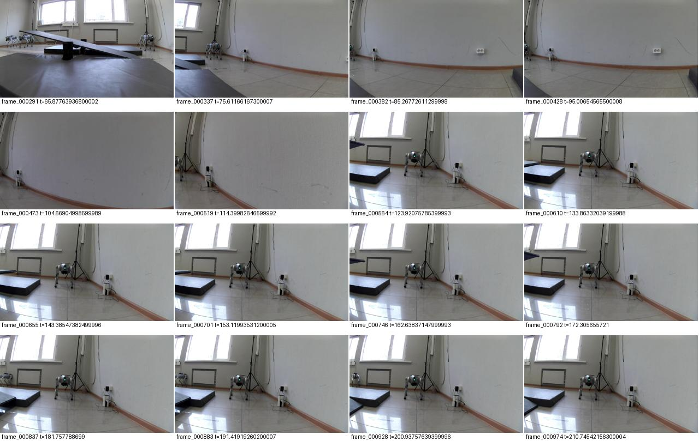
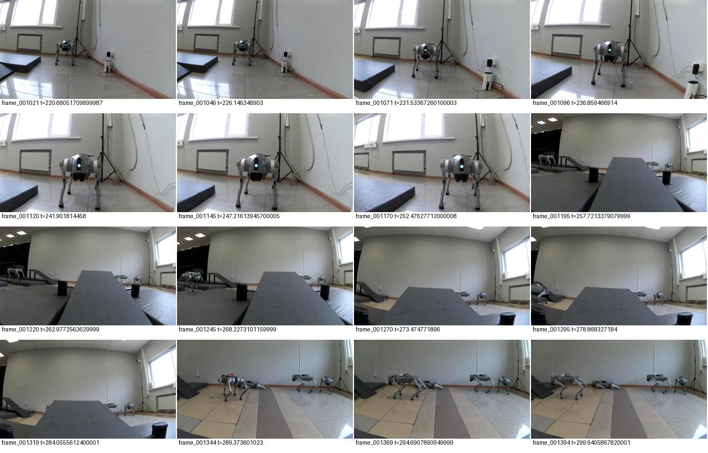
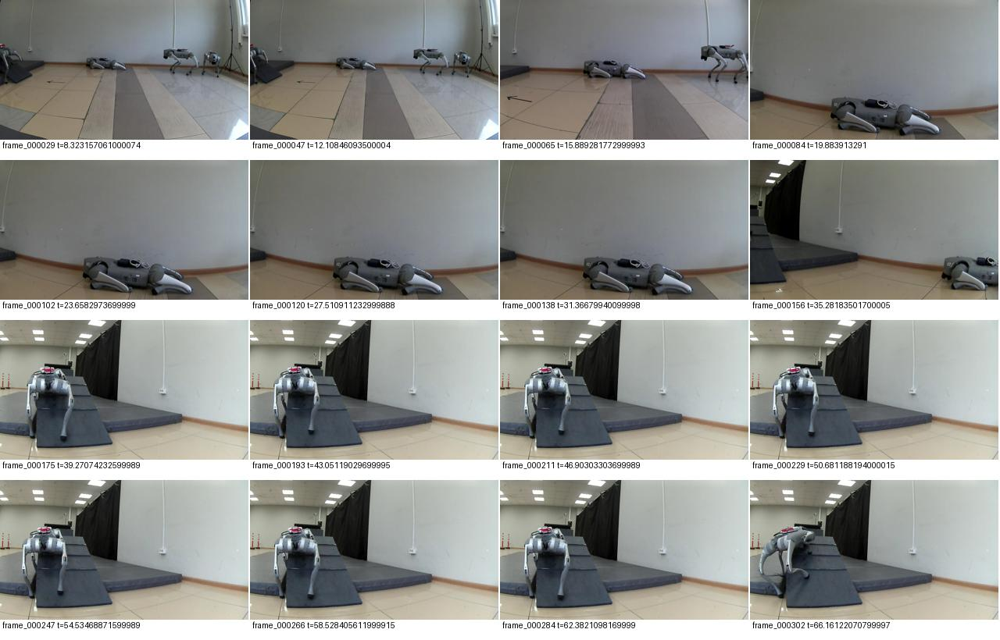
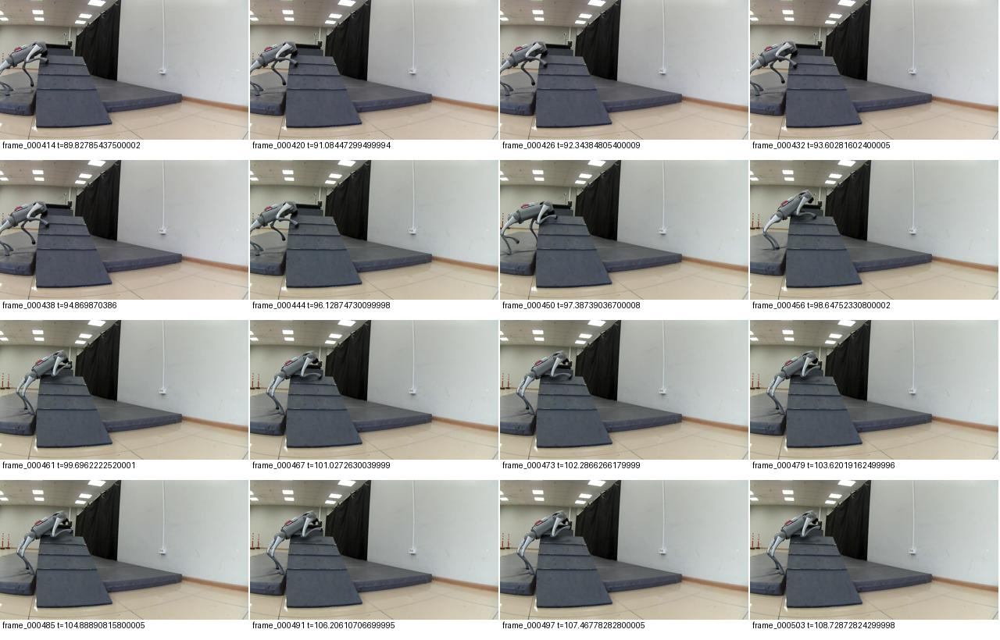
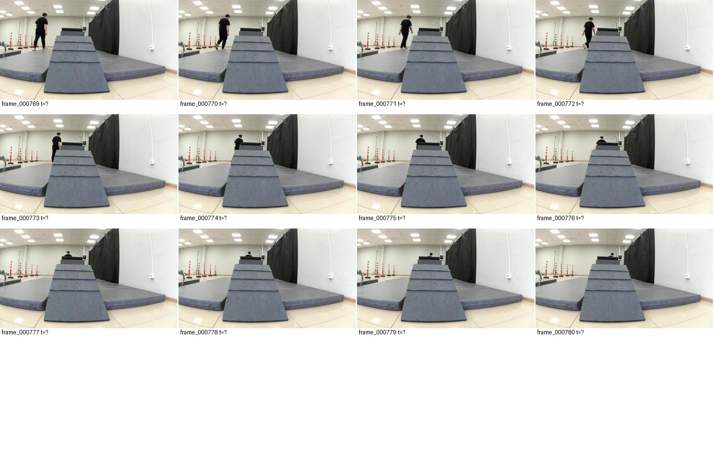

Что удалось записать 24 сентября
Локальная проверка пяти новых сеансов, 10 фрагментов и 4192 JPEG. Выводы основаны на журнале событий, доступной телеметрии, отметках оператора и просмотре обзорных кадров. Это технический разбор, не судейское подтверждение зачёта.
Результат по препятствиям
| Этап | Что подтверждается | Где искать |
|---|
| Змейка | Есть движение между конусами и последовательные отметки их обхода. Запись полезна для анализа траектории. Точное соблюдение сторон обхода всех конусов требует восстановления траектории; по обзорным кадрам судейский зачёт не устанавливается. | 10:27:50 UTC, run_001, 18,8–211,8 с; выравнивание к следующему препятствию — 236,6 с. |
| Малая горка А | Визуально согласуются подъём, нахождение наверху и спуск к качелям. Отметки «залез», «на горке», «слез» соответствуют последовательности кадров. | 10:27:50 / run_002 → 10:33:23 / run_001 → 10:34:49 / run_001, спуск отмечен на 48,2 с. |
| Качели | Видны заход на доску, изменение её положения и дальнейший выход на пол. Подтверждается и комментариями оператора. | 10:34:49 / run_003: 265,0 с — перед качелями, 281,2 — заезд, 296,9 — опустилась. Продолжение 10:40:31 / run_001: 30,2 с — на полу. |
| Длинная рампа / последняя горка | Не пройдена по сообщению оператора и отметке «упал». Локально отсутствует основная часть кадров и телеметрия этой попытки, поэтому точное место срыва и его физическую причину установить нельзя. | 10:40:31 / run_003: 168,6 и 207,3 с — перед рампой; 234,7 — на рампе; 275,6 — упал. |
Названия сеансов содержат UTC. Для московского времени прибавить 3 часа. Времена в секундах отсчитываются от начала работы серверного процесса, а не от кнопки записи.
Последняя рампа: скорость уже менялась
В журнале: на 176,9 с выбран ramp25 (0,25 м/с), на 204,6 с — obstacle (0,15 м/с), на 221,9 с — снова ramp25. После отметки «на рампе» остаются остановки: на 249,2 с — камера не обновляется; на 253,6, 257,9–260,4 и 268,4–269,5 с — просроченные команды. Это подтверждает прерывистое управление, но не доказывает, что именно оно вызвало падение.
Вывод: повторять попытку только с другой скоростью недостаточно. Сначала нужен устойчивый канал управления и полная запись попытки. Указанная в команде скорость — уставка, а не измеренная скорость корпуса. По отсутствующей телеметрии нельзя оценить проскальзывание, контакты ног или наклон при падении.
Что недокачано
- 10:17:50: нет итоговых summary.json и run_status.json; в run_001 нет telemetry.jsonl. Камера и события доступны.
- 10:40:31: нет итоговых summary.json и run_status.json. В run_003 лишь 12 кадров начала подхода, отсутствуют camera.jsonl и telemetry.jsonl.
- Три промежуточных сеанса имеют итоговые файлы. Это не равнозначно проверке всех контрольных сумм.
Не удалять эти сеансы с Pi до докачки. Недостающие файлы локально не означают, что их нет на плате. Без доступа к оставшейся записи точный анализ падения будет спекуляцией.
Почему было трудно управлять
За пять сеансов журнал содержит 556 отклонений просроченных команд (293 + 44 + 146 + 48 + 25). Это число событий, а не 556 независимых сетевых разрывов. Повторные StopMove могли задерживать очередь; исправление этой ошибки сделано позднее, поэтому данные записи не проверяют исправленную версию.
Локально сохранённые индексированные кадры идут примерно 4,7 раза в секунду; максимальный промежуток между их временными метками в каждом доступном фрагменте менее 0,29 с. При этом клиент сообщал о зависании камеры. Следовательно, сохранение кадров на Pi и доставка предпросмотра на ПК — разные участки; наличие записи не гарантирует исправный предпросмотр.
Ограничение сеанса 300 секунд дважды разорвало прохождение на части. Это видно по событиям завершения в 10:27:50 и 10:34:49. Для следующих опытов надо убрать этот организационный разрыв, сохранив остановку при потере команд.
Следующий план
- До подключения — моя часть: устранить пятиминутный разрыв тренировочного сеанса, показывать причину каждой остановки, отделить проблемы предпросмотра от доставки управления, обеспечить проверяемую докачку. Эти пункты — план, не заявление о выполнении в этом разборе.
- Первые 5 минут — вместе: на полу проверить W/S, Q/E, поворот, отпускание клавиш, выбранный профиль. Записать минуту работы без смены окон и проверить журнал на задержки.
- До 10-й минуты: докачать 10:17:50 и особенно 10:40:31/run_003. Я сопоставлю последние кадры с командами и телеметрией.
- 10–30-я минуты: одна непрерывная запись длинной рампы с подходом, подъёмом, ступенями и исходом. Изменять по одному параметру за попытку. 0,25 м/с рассматривать как уже испытанную уставку, а не гарантированное решение. Не добавлять подпись во время движения: текущий интерфейс останавливает робота при вводе текста.
- 30–40-я минуты: если проблема локализована, повторить изменённую попытку; иначе записать детально проблемный переход. Сохранять и неудачи.
- Последние 10 минут: закончить запись, скачать все новые фрагменты, проверить наличие кадров, телеметрии и итогов. Не тратить весь слот на движение.
Змейку, малую горку и качели используем как материал для распознавания входа, выхода и фаз прохождения. Простое повторение длительностей WASD не станет надёжной автономностью: другие собаки и остановки уже заметно меняли маршрут.
Кадры и отметки по сеансам
Ниже равномерная выборка кадров каждого фрагмента. Это обзор, а не непрерывное видео. Не следует трактовать собаку, видимую впереди, как падение нашего робота: это другой участник.
20260924T101750.127230Z
Все отметки оператора
- 22.4 с — пол
- 106.9 с — стою перед конусами змейка
run_001: 1104 кадров; 0 строк телеметрии

20260924T102750.300235Z
Все отметки оператора
- 18.8 с — Начало змейкиц
- 59.4 с — второй конус
- 86.1 с — прошел конус 2
- 108.9 с — конус 3
- 127.7 с — конус 3 прошел
- 147.9 с — конус 2
- 171.0 с — конус 2 прошел
- 192.2 с — конус 1
- 211.8 с — конус 1 прошел
- 236.6 с — выровнялся перед следующим препятствием
- 255.3 с — смотрю на горку после змейки
- 273.3 с — стою перед гокрой А
- 294.4 с — залез на горку А
run_001: 1098 кадров; 16636 строк телеметрии

run_002: 223 кадров; 3361 строк телеметрии

20260924T103323.472250Z
Все отметки оператора
- 10.5 с — залез на горку А
run_001: 150 кадров; 2339 строк телеметрии

20260924T103449.016419Z
Все отметки оператора
- 22.4 с — на горке А
- 48.2 с — слез с горки А
- 66.9 с — стою перед следующим препятсвием качели
- 90.6 с — путь к качелям начало
- 209.0 с — ждал починку горки
- 221.7 с — иду на качели
- 248.9 с — сейчас поверну влево на качели
- 265.0 с — стою перед качелей
- 281.2 с — залез на качелю немного
- 296.9 с — каеля опустилась
run_001: 183 кадров; 2788 строк телеметрии

run_002: 684 кадров; 10369 строк телеметрии

run_003: 374 кадров; 5676 строк телеметрии

20260924T104031.431138Z
Все отметки оператора
- 9.9 с — качля опустилась
- 30.2 с — спустился на пол после качели
- 62.7 с — повернулся на рампу передо мной собака на ней жду пока уйдет
- 168.6 с — перед рампой
- 207.3 с — перед рампой
- 234.7 с — на рампе
- 275.6 с — упал
run_001: 274 кадров; 4154 строк телеметрии

run_002: 90 кадров; 1363 строк телеметрии

run_003: 12 кадров; 0 строк телеметрии
